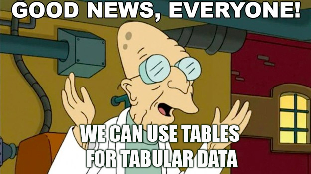
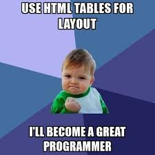

Специально для конференции FrontHub, Воронеж, 23.11.2019
«Свобода, ведущая народ», Эжен Делакруа
| Бро | Не Бро |
|  |  |
Таблицы может использоваться для представления табличных отношений между данными.
See the Pen Tables. Ex2. overflow by Alena (@solarrust) on CodePen.
Горизонтальный скролл
See the Pen Tables. Ex3. Flex by Alena (@solarrust) on CodePen.
Карточки — новый чёрный
See the Pen Tables. Ex4. Flex + before by Alena (@solarrust) on CodePen.
Подписи для ячеек
Не используйте display: none
thead {
position: absolute;
top: -9999px;
left: -9999px;
}
Tab для навигации по интерактивным элементам.
Клавиши VO + ← ↑ ↓ → для навигации по простому тексту или таблицам, расположенным на странице.
Клавиши VO по умолчанию равны Ctrl + Option.
role
<table>
<thead role="rowgroup">
<tr role="row">
<th role="columnheader">Имя</th>
...
</thead>
</table>
role 🦸♂️<table> — table<thead> / <tbody> / <tfoot> — rowgroup<tr> — row<td> — cellcolumnheader для каждогоrowheader для каждогоscopeПоговорите с заказчиком / дизайнером и выясните, все лиданные нужна для пользователя с мобильным телефоном?
Спрячте ненужные колонки, но не забудьте про aria-hidden="true"
See the Pen Tables. Not table by Alena (@solarrust) on CodePen.
Эксперимент
while (true) {
console.log(«Разработчики избегают таблиц»);
console.log(«Рабочие группы не уделяют им достаточно внимания»);
console.log(«Стандарт не развивается»);
}